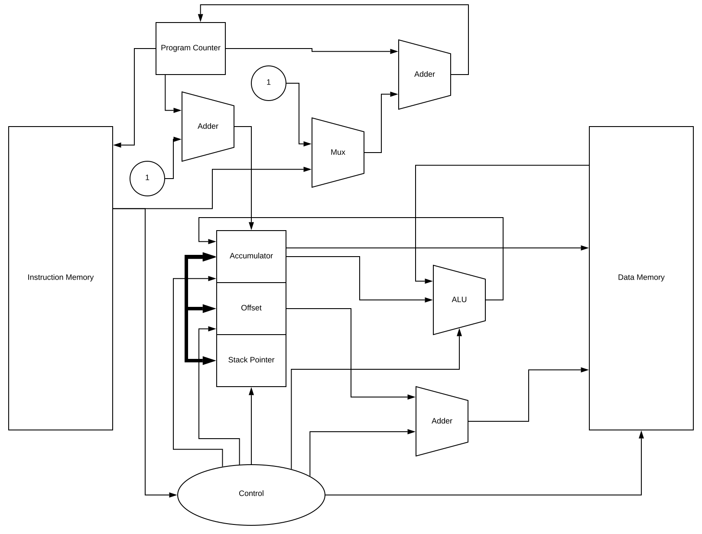

Small Processing Unit
Small Processing Unit (SPU) is a accumulator based processing unit written in (I)verilog.
The processor is implemented so that the word size of the processor can be changed by simply editing one line in the verilog file (any number of bits greater than 4)
Only 12 basic instructions.
[Source]
Architecture

Instruction Set
There are only 12 instructions, each represented by a 4 bit opcode.
| opcode |
instruction |
behaviour |
| 00 | add $a | acc := mem[a] + acc |
| 01 | xor $a | acc := mem[a] ^ acc |
| 02 | or $a | acc := mem[a] | acc |
| 03 | and $a | acc := mem[a] & acc |
| 04 | seq $a | acc := acc = mem[a] |
| 05 | slt $a | acc := acc < mem[a] |
| 06 | sl $a | acc :=acc << mem[a] |
| 07 | sr $a | acc :=acc >>> mem[a] |
| 08 | imm $a | acc := a |
| 09 | ifjump $a | pc := a if acc else pc + 1 |
| 10 | store $a | mem[a] := acc |
| 11 | move $a1 $a2 | a2 := a1 |
This is supplemented by several macros.
| macro |
behaviour |
| load $a | acc := mem[a] |
| jump $a | pc := a |
| call $a | acc := mem[a] | acc |
| TODO inv $a | acc := mem[a] | acc |
| TODO mult $a | acc := mem[a] | acc |
| TODO sub $a | acc := mem[a] | acc |
Further
There are several more things worth exploring:
- I am working on a floating point coprocessor to augment the SPU.
- Given the accumulator structure, the process is heavily dependant on memory. In the future I might add data/instruction memory caches to exploit temporal and spacial locality.
- I would like to implement the SPU on a FPGA.
- implment memory mapped (mapped through data) devices (video 640 by 480, getchar, putchar, etc)